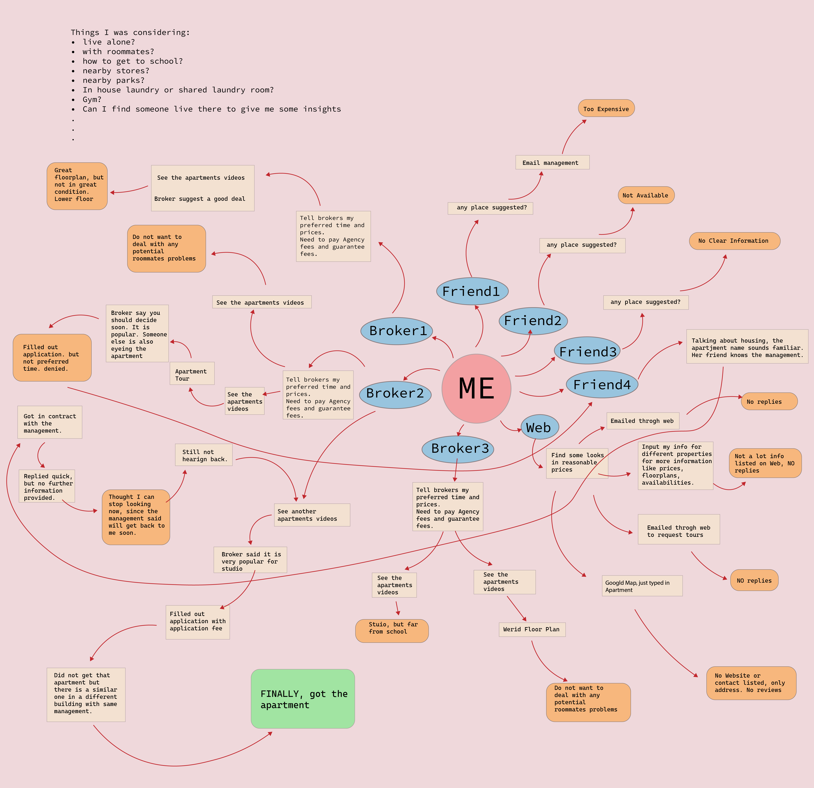
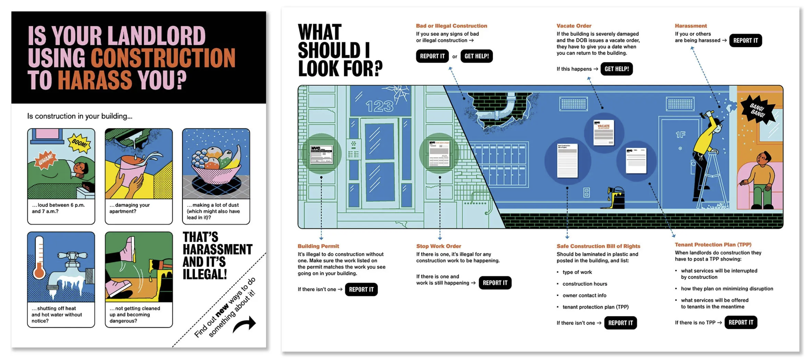

SHELTER is basic human right. It should be easy for anyone to find a house. Finding a house in NYC is not easy. Finding a house that is a good fit is even harder. The process felt obscure and non-transparent.
My Housing Search Process felt like a maze

"Information is power. Access to information enhances one's power." - Jo Freeman
Review of UWS from Reddit
Different Way to Search - Sentiment Landscape
What is it really like to live there?
Break the Information Wall !
"Equal access to resources needed by the group. This is not always perfectly possible, but should be striven for."
- Jo Freeman
Ambassador Program/Platform for buyers or renters to connect with people living in the properties.

Real-time feedback of neighborhood
Center for Urban Pedagogy
Reference
https://welcometocup.org/projects/is-your-landlord-using-construction-to-harass-you
https://www.jofreeman.com/joreen/tyranny.htm